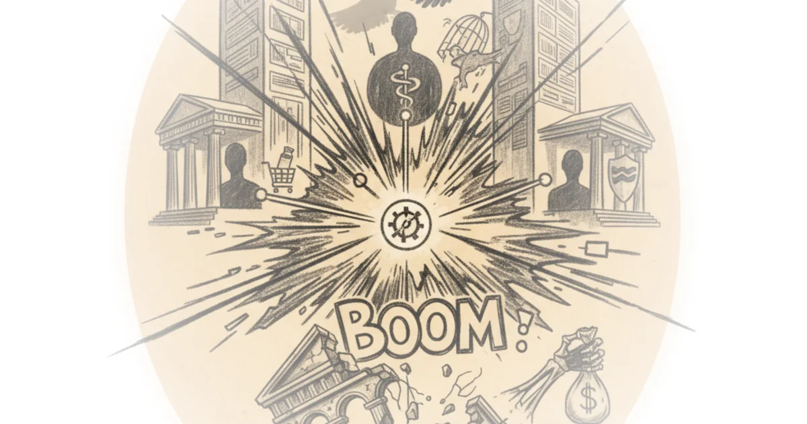

The ICE shootings are a tipping point G. Elliott Morris · G. Elliott Morris ·Jan 27, 2026 · 15 min read · Political Strategy
Eisenhower’s big mistake? Matthew Yglesias · Slow Boring ·Jan 27, 2026 · 12 min read · Political Strategy
The administration is eroding the case for keeping protests nonviolent Jesse Singal · ·Jan 26, 2026 · 15 min read · Political Strategy
How to block ICE in your city Eric Blanc · Labor Politics ·Jan 26, 2026 · 22 min read · Political Strategy
Does therapy culture explain the ideological mental health gap? Richard Hanania · ·Jan 26, 2026 · 12 min read · Political Strategy
A turning point in Minnesota Matthew Yglesias · Slow Boring ·Jan 26, 2026 · 12 min read · Political Strategy
Roundup #76: Great powers acting stupid Noah Smith · Noahpinion ·Jan 26, 2026 · 15 min read · Political Strategy
January 25, 2026 Heather Cox Richardson · Letters from an American ·Jan 26, 2026 · 10 min read · Political Strategy
Strategic blindness Claire Berlinski · The Cosmopolitan Globalist ·Jan 25, 2026 · 25 min read · Political Strategy
The end of the West: Europe's declaration of independence Jeff Rich · ·Jan 23, 2026 · 18 min read · Political Strategy
Reviving the specter of bond vigilantes Brian Beutler · ·Jan 23, 2026 · 11 min read · Political Strategy
How silver bulletin calculates our polling averages Nate Silver · ·Jan 22, 2026 · 11 min read · Political Strategy
Let companies set prices Matthew Yglesias · Slow Boring ·Jan 22, 2026 · 18 min read · Political Strategy
Let's save the human species! Noah Smith · Noahpinion ·Jan 22, 2026 · 16 min read · Political Strategy
I tracked down the companies bribing More Perfect Union · More Perfect Union ·Jan 21, 2026 · 11 min read · Political Strategy
Academia's putinverstehers Claire Berlinski · The Cosmopolitan Globalist ·Jan 21, 2026 · 17 min read · Political Strategy
Boom: Congress imposes public utility rules on UnitedHealth, cvs, and cigna Matt Stoller · ·Jan 21, 2026 · 10 min read · Political Strategy 
The strategic love story of justin trudeau and katy perry The Walrus · ·Jan 21, 2026 · 12 min read · Political Strategy
Epistemic populism Claire Berlinski · The Cosmopolitan Globalist ·Jan 20, 2026 · 18 min read · Political Strategy
How did mlk jr. Become a socialist? Eric Blanc · Labor Politics ·Jan 19, 2026 · 14 min read · Political Strategy
Celebrate a king, not a Sarah Longwell, Tim Miller, Bill Kristol · The Bulwark ·Jan 19, 2026 · 12 min read · Political Strategy
Monopoly round-up: The slow death of banking in America Matt Stoller · ·Jan 19, 2026 · 15 min read · Political Strategy
20 years of erdoğan. A Great Turkey — a fragile Turkey? Good Times Bad Times · Good Times Bad Times ·Jan 18, 2026 · 19 min read · Political Strategy
Meet Canada's most infamous mayor BobbyBroccoli · BobbyBroccoli ·Jan 17, 2026 · 86 min read · Political Strategy
60,000 voters just elected a socialist. We asked them why More Perfect Union · More Perfect Union ·Jan 16, 2026 · 13 min read · Political Strategy
Is right about Chicago? We went to the most dangerous parts to find out More Perfect Union · More Perfect Union ·Jan 15, 2026 · 23 min read · Political Strategy
Ro khanna: Progressive capitalism Doom Scroll · Doom Scroll ·Jan 14, 2026 · 47 min read · Political Strategy